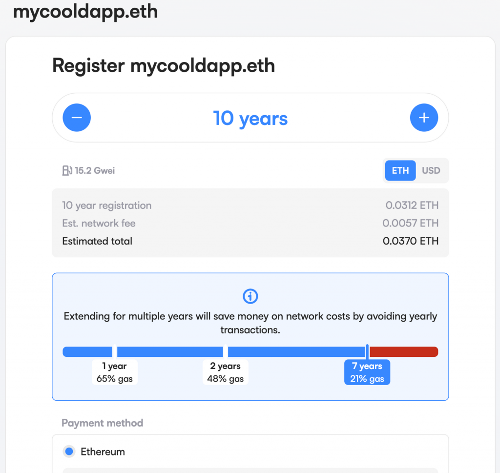
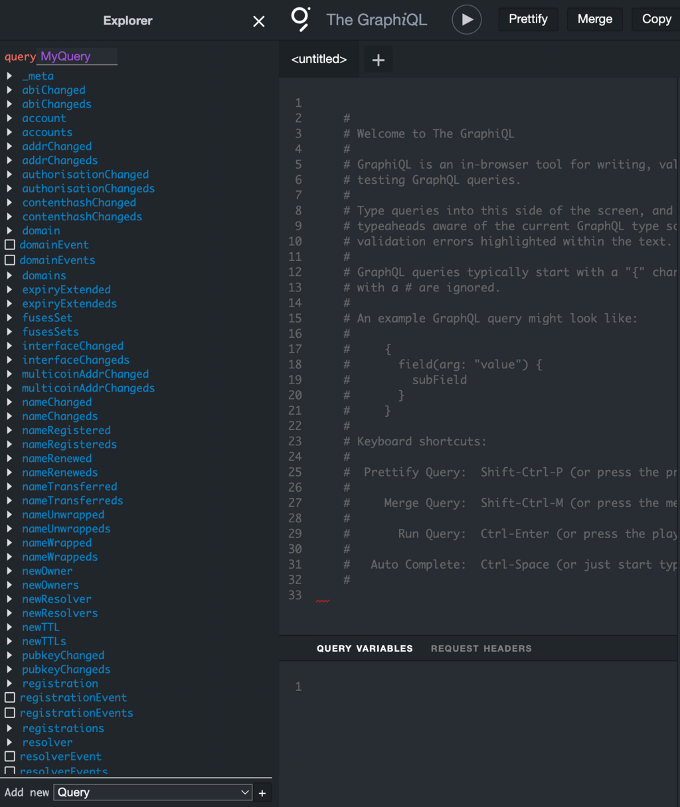
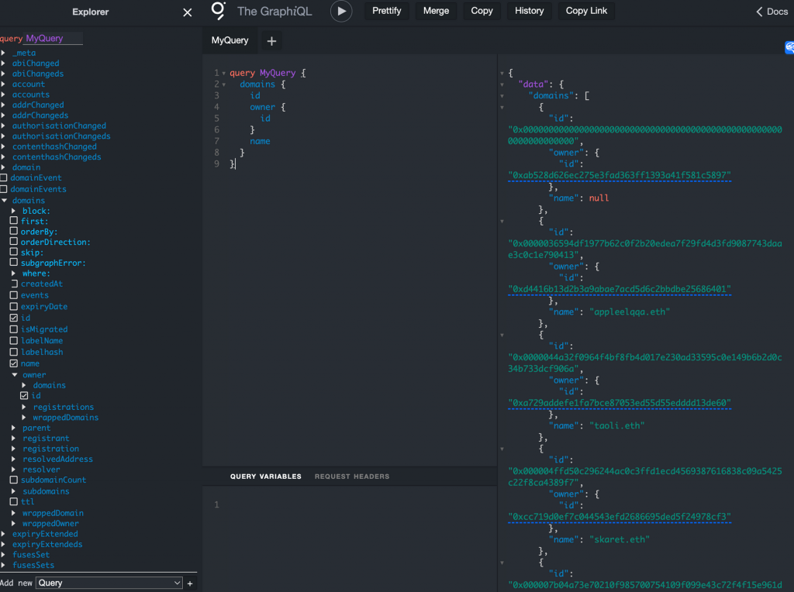
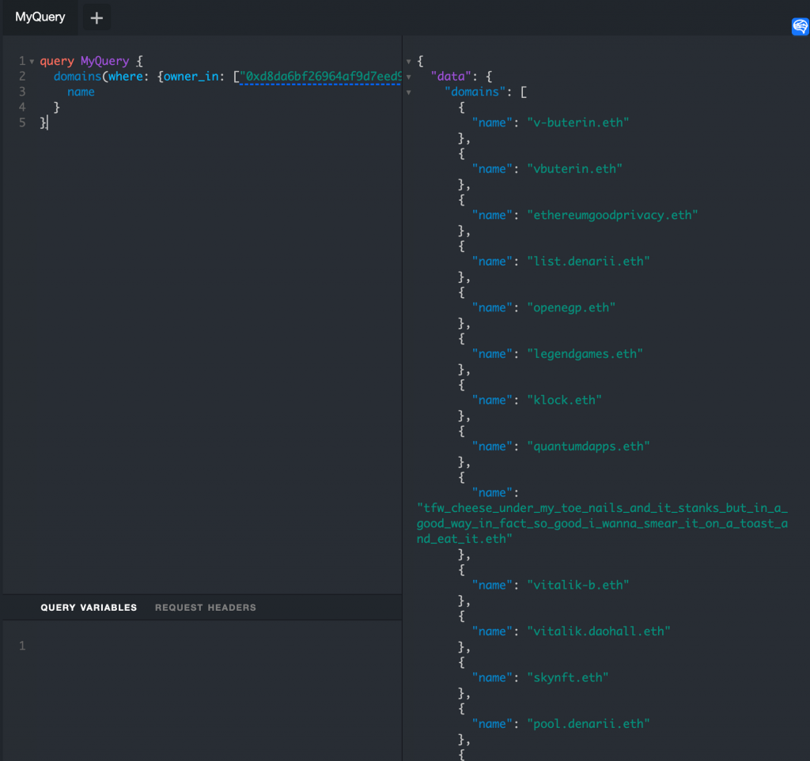
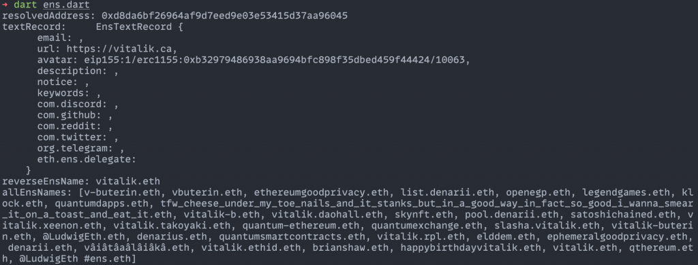

今天要來介紹一個 Ethereum 上有趣的 DApp：ENS，以及如何使用 Dart 去查詢 ENS 相關的資料，也就是 Domain name 跟地址之間的轉換，並且為了取得完整資料會介紹 The Graph 這個區塊鏈資料的 Protocol。
ENS 的全名是 Ethereum Name
Service，他主要的目的是讓以太坊的使用者可以不用記憶複雜的以太坊地址（也就是長度
40 的 hex 字串），而只要記得好懂的名稱就好，像是
yourname.eth, nike.eth 等等，這就類似 DNS
可以讓人們不用記得 IP 而只要記 google.com 這樣的域名。因此 ENS
設計了一套機制把 .eth 結尾的這種 domain name
轉換成以太坊地址，任何人都可以去註冊新的域名來對應到自己的地址。
讀者可以直接到 ENS 的官網來註冊一個屬於自己的 domain name，價格跟 Web 2 的 DNS 比起來算是便宜的（不過越短的 domain name 越貴），例如下面這個未被註冊的 domain 如果註冊十年的話要花 0.037 ETH，大約是 60 USD。

特別的是 ENS 把每個域名都變成了一個 NFT，這樣就自動讓域名可以在像 Opensea 這樣的 NFT 二手市場上交易（對應的 Opensea Collection），這就消除了在 Web 2 的域名交易成本太高的問題。因此如果在二手市場有看到自己喜歡的 domain name，直接購買後也會成為自己的 domain。
在 ENS 的機制中，會把從 domain name 轉換成地址的過程稱為正向的解析（Domain name resolution），因為這就是註冊這個 domain 的目的。而在註冊 domain 後他會問你是否要將這個 domain name 設成自己的 Reverse Lookup Domain Name，這是因為一個地址可以有多個 domain name，所以 Reverse Lookup 代表設定從地址轉成預設的 domain name 的機制，一個地址也就只會對應到一個 Reverse Lookup Domain Name，這個過程也被稱為反向解析。
而在 Dart 中已經有 ens_dart
這個套件可以幫我們做正向跟反向的 ENS 解析。以下拿 vitalik.eth
為例，只要用一個 Web3Client 去初始化 Ens
他就能去 ENS 的智能合約上做正向跟反向的 domain name resolution：
[code] import ‘package:ens_dart/ens_dart.dart’; import ‘package:web3dart/web3dart.dart’;
final rpcUrl = 'https://eth-mainnet.g.alchemy.com/v2/${alchemyApiKey}';
final web3Client = Web3Client(rpcUrl, Client());
final ens = Ens(client: web3Client);
final resolvedAddress = await ens.withName("vitalik.eth").getAddress();
print('resolvedAddress: ${resolvedAddress}');
final reverseEnsName = await ens
.withAddress("0xd8da6bf26964af9d7eed9e03e53415d37aa96045")
.getName();
print('reverseEnsName: $reverseEnsName');[/code]
實際執行後可以得到以下結果
[code] resolvedAddress: 0xd8da6bf26964af9d7eed9e03e53415d37aa96045 reverseEnsName: vitalik.eth
[/code]
但由於在 pub.dev
上的套件如果直接使用的話會遇到 http 套件版本的問題，我們各自 fork
了一個自己的版本來解決這個問題，因此在 pubspec.yaml
中的套件依賴要改成以下套件才會成功
[code] dependencies: web3dart: git: url: https://github.com/kryptogo/web3dart.git ref: main ens_dart: git: url: https://github.com/kryptogo/ens_dart.git ref: master
[/code]
另外一個 domain name 除了可以對應到地址外，其實上面還可以儲存其他
metadata ，例如 email、網址、大頭貼等等，這些在 ENS
的網頁上都可以設定，這些紀錄稱為 Text Record，可以使用
getTextRecord() 拿到：
[code] final textRecord = await ens.withName(“vitalik.eth”).getTextRecord(); print(‘textRecord: $textRecord’);
[/code]
實際執行後可以得到以下結果
[code] textRecord: EnsTextRecord { email: , url: https://vitalik.ca, avatar: eip155:1/erc1155:0xb32979486938aa9694bfc898f35dbed459f44424/10063, description: , notice: , keywords: , com.discord: , com.github: , com.reddit: , com.twitter: , org.telegram: , eth.ens.delegate: }
[/code]
可以看到 vitalik.eth 這個 domain
還設定了網址跟大頭貼，而這個大頭貼是指向一個 NFT
的圖片，這個字串的格式是在 ENS 相關的標準中定義的（ENSIP-12
Avatar Text Records）。至於這個 NFT 對應到什麼圖片，就留給讀者到
0xb32979486938aa9694bfc898f35dbed459f44424 這個智能合約查詢
10063 這個 Token ID 對應到的 NFT 圖片是什麼了。
有了正向與反向解析的結果後，我們還差一個資訊目前沒辦法拿到，那就是一個地址對應的所有 ENS Domain 有哪些？這就要介紹到 The Graph 來協助我們拿到資料。
The Graph 這個協議可以幫助開發者更方便地從區塊鏈上取得更複雜的資料。以 ENS 應用為例，可以想像一個地址註冊的所有 ENS 資訊一定都紀錄在鏈上，畢竟只要去看所有他在鏈上的紀錄就可以了。但因為無法直接從智能合約的 read function 中拿到，就需要有人幫我們先 index 好這些資料，才能快速查詢。而 The Graph 就是將這件事標準化的協議。
在 The Graph 協議中，開發者可以創建 Subgraph 來對區塊鏈上的資料即時做 indexing，並讓其他開發者用 Graph QL 的 API 來獲取資料（對 Graph QL 不熟悉的讀者可參考官方文件）。這背後需要 The Graph 的節點來 index 資料，不過細節的機制以及他的經濟激勵模型如何設計今天就不會講到。在他官方有個 Subgraphs 頁面可以看到許多別人建立好的 Subgraph，裡面有關於一些 DeFi Protocol 的協議資料可以用。而今天需要的資料就要從 ENS Subgraph 拿到。
ENS Subgraph 有個可以線上測試的 Graph QL 介面，進去後點 Explorer 就可以看到所有支援的 GraphQL Query:

這裡有許多豐富的 ENS 相關資料，今天會用到的是 domains 的資料，這裡可以查到哪個地址註冊了哪個 ENS domain，例如在介面上試著抓出 owner 與 name 就可以拿到這樣的資料：

因此只要能 filter 出 owner address 是特定地址的所有記錄，就能拿到他對應的所有 ENS Domain 了。而這只要用 Graph QL 的 where 語法就可以做到：
[code] query MyQuery { domains(where: {owner_in: [“0xd8da6bf26964af9d7eed9e03e53415d37aa96045”]}) { name } }
[/code]
實際執行結果如下

這樣只要把這個查詢方式用 Dart 實作出來就好了。以下是用 Dart 實作打 ENS Subgraph API 的程式碼：
[code] Future<List
final response = await Client().post(
Uri.parse('https://api.thegraph.com/subgraphs/name/ensdomains/ens'),
headers: {'Content-Type': 'application/json'},
body: jsonEncode({
"query": query,
}),
);
if (response.statusCode >= 400) {
throw Exception(response.body);
}
final parsedData = jsonDecode(response.body);
final responseData = parsedData['data'];
var ensNames = <String>[];
if (responseData['domains'] != null) {
for (final v in responseData['domains']) {
ensNames.add(v['name']);
}
}
return ensNames;
}
// main
final allEnsNames =
await getENSNames("0xd8da6bf26964af9d7eed9e03e53415d37aa96045");
print('allEnsNames: $allEnsNames');[/code]
最後把以上程式碼結合起來，執行結果會像以下這樣，成功拿到地址跟 domain 之間的一對多對應了！

今天介紹了 ENS 的應用以及如何透過 ENS package、The Graph Protocol 來拿到 ENS 協議的相關資料，完整程式碼在這裡。如同文中所說 The Graph 的 ENS Subgraph 其實還有很多有趣的資料，包含 domain 註冊時間、domain 轉移紀錄等等，還有其他 Subgraph 的資料可以供讀者探索。今天的內容就作為第一部分 Web3 與 App 開發的結尾，接下來會再回到 Web3 與前端來探討更進階的主題。